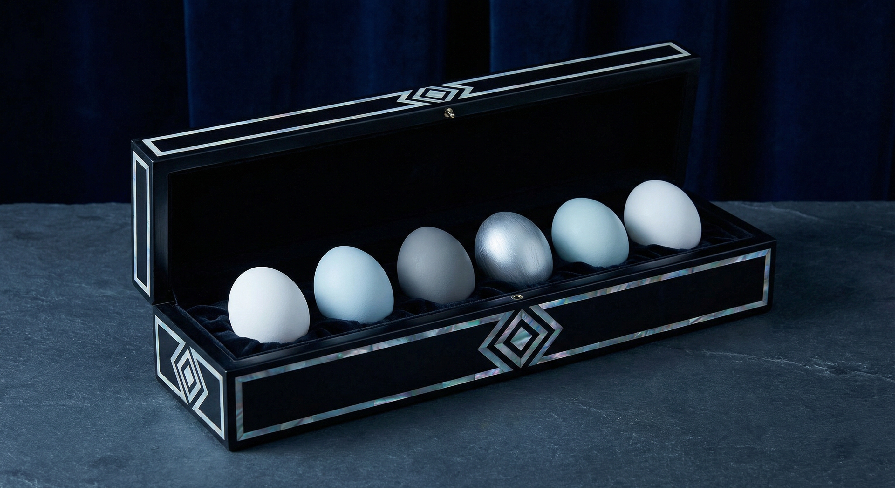

Шкатулка «Северное сияние»
36 000 ₽
Яйца в наборе

В коллекцию входят 6 яиц холодной гаммы: белый, голубой, фиолетовый, серебристо-серый. Набор составлен из яиц Кремлёвской леггорн, Арауканы и Ухейилюй. Морозная элегантность — идеально для зимних праздников и новогоднего стола.
Породы в наборе
 Кремлёвская леггорн
Кремлёвская леггорн Араукана
Араукана Ухейилюй
УхейилюйУпаковка
Длинная шкатулка из чёрного дерева с инкрустацией перламутром. Контраст тёмного дерева и холодных оттенков яиц создаёт образ северной ночи.
История пород
Леггорн даёт белые яйца; Араукана — голубые и бирюзовые; Ухейилюй — оливковые и серо-зелёные. В холодной подборке отбираются самые «ледяные» оттенки — серебристые и приглушённые варианты, напоминающие палитру полярного сияния.
История шкатулки
Чёрное дерево с инкрустацией перламутром — традиция североевропейской и русской мебели и аксессуаров. Длинный формат шкатулки ассоциируется с хранением драгоценностей и особых подарков; перламутр добавляет холодный блеск, перекликающийся с темой северного сияния.